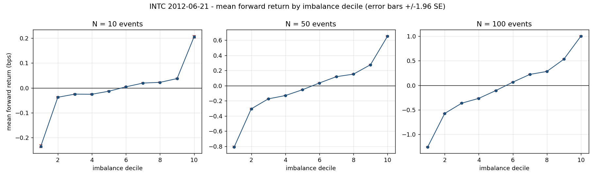
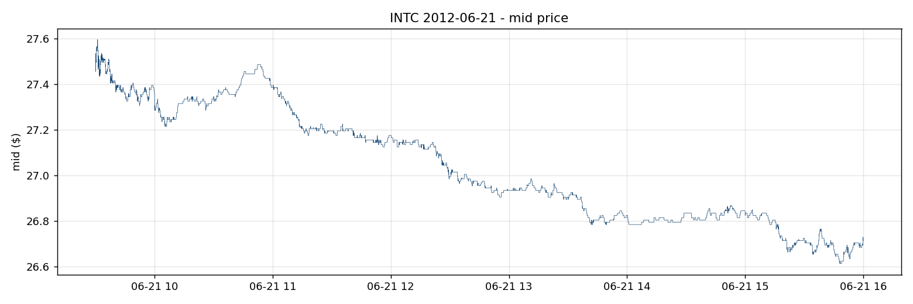

Order Flow Imbalance in Limit Order Books
I studied whether the balance of orders at the best bid and ask predicts the next mid-price move—and whether that move is large enough to cover the spread.

The question I worked on
I used this project to ask a fairly specific question: when there is much more size waiting at the best bid than at the best ask, does the mid-price tend to move up over the next few events? I measured that relationship first, then compared its size with the cost of entering a trade. A strong regression result would only answer the first part.
I worked with the INTC sample from LOBSTER for June 21, 2012. It contains 624,040 events and ten levels of book depth. The analysis uses the best bid and ask, but the full snapshots let me check the alignment between the message stream and the book state.
What is actually in the event stream
| Event | Count | Share |
|---|---|---|
| New visible limit order | 304,790 | 48.84% |
| Partial cancellation | 8,028 | 1.29% |
| Total deletion | 278,739 | 44.67% |
| Visible execution | 28,924 | 4.63% |
| Hidden execution | 3,559 | 0.57% |
One detail worth keeping in mind is that most of these events are not trades. New orders, cancellations, and deletions make up about 94.8% of the file. Only about 5.2% are executions. I am measuring changes in the queue as orders arrive and disappear, rather than treating every event as a transaction.
I added filters for events outside the regular session and for cross or halt messages. None of the rows in this sample triggered those filters. I also checked for crossed books, locked books, empty sides, and padded levels. The real sample did not exercise the padding path, so I checked that separately using a synthetic book with missing levels.
How I made sure the rows lined up
The message file has six columns and the order-book file has forty. Their rows describe the same event sequence, but it matters whether a snapshot is the state before or after its message. An off-by-one error here could quietly turn the analysis into a different experiment.
I checked visible size changes against the previous snapshot at the event’s own price level. In the rerun recorded on this page, 1,993 eligible sampled events all passed that check. I then read the imbalance and current mid-price from the same post-event state.
I compute queue imbalance as (bid size − ask size) / (bid size + ask size), which puts it between −1 and +1. For each row I look 10, 50, or 100 events ahead and calculate the mid-price return. The final N rows at each horizon stay undefined instead of being filled with zeros.
I also check the direction of that shift on rows where the price actually changes. At the 10-event horizon, 95.45% of rows have no mid-price change. A casual check on a handful of flat rows could pass even if the time direction were wrong.
What the regressions show
| Horizon (events) | Observations | Coefficient (bps) | Naive t | Newey–West t | R² |
|---|---|---|---|---|---|
| 10 | 624,030 | 0.252 | 197.9 | 48.6 | 0.05905 |
| 50 | 623,990 | 0.901 | 331.5 | 47.3 | 0.14972 |
| 100 | 623,940 | 1.461 | 381.2 | 43.5 | 0.18887 |
The coefficient is positive at all three horizons, and the decile plot gives the same picture: higher bid-side imbalance goes with a higher average forward return in this sample. At 100 events, the bottom decile averages about −1.259 basis points and the top decile about +1.002 basis points.
I report both naive and Newey–West t-statistics because consecutive return windows overlap. Two adjacent 100-event observations share 99 events. Treating them as independent makes the result look much more precise than it is. At that horizon, the t-statistic falls from 381.2 to 43.5 after the correction, an 8.8× difference.
The R² reaches 0.18887 at 100 events. I would not carry that number over to another stock without checking its tick regime. INTC spends 76.7% of this sample at a one-cent spread, with substantial depth waiting at the touch. Queue depletion is a plausible part of the explanation here; this study does not separate that mechanism from other sources of predictability.
The spread changes the interpretation
I converted the top-decile return back into cents using its mean mid-price of $27.1208. The implied move is only 54.3% of the median half-spread, leaving a 0.2283-cent shortfall before fees or an exit trade. That is why I do not present this as a profitable trading strategy.
Passive execution would be a different problem, but I have not modeled queue priority, fill probability, or adverse selection. The analysis cannot establish that posting a limit order captures the measured move either.
Checks beyond the headline number
| 100-event check | Coefficient (bps) | HAC t | R² |
|---|---|---|---|
| Opening hour | 1.621 | 19.7 | 0.142 |
| Midday | 1.434 | 35.2 | 0.223 |
| Final hour | 1.388 | 21.7 | 0.254 |
| One-cent spreads | 1.434 | 41.3 | 0.207 |
| Exclude ±10 events around executions | 1.039 | 32.0 | 0.113 |
| Shuffled imbalance | 0.002 | 0.46 | 0.00000033 |
I split the session into opening, midday, and closing periods, restricted it to one-cent spreads, and removed observations near executions. The relationship weakens in some of those checks but remains positive. When I shuffle the imbalance values, the 100-event R² falls to roughly 0.00000033 and the HAC t-statistic to 0.46. That placebo is a useful contrast with the ordered data.
What I take from the project
The useful result is the combination of the statistical relationship and its economic size. I can see an orderly pattern in the book, correct for a major source of overstated precision, and still find that paying the spread would overwhelm the average move. Keeping those calculations together makes the conclusion much more specific than simply calling imbalance a predictor.
This is one stock on one day, measured in event time. I have not done an out-of-sample backtest or a multi-ticker study. The next work would be to test different tick regimes, hold out days for evaluation, and add an execution model. For sessions with prolonged trading halts, I would also extend the filter to track halt state across events rather than only exclude halt-marked rows.
